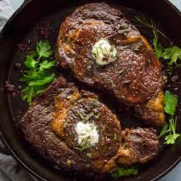

Rib-eye Steak

Description
Ribeye steak is a cut of beef from the cow's rib primal that's known for its tenderness, juiciness, and rich marbling of fat
Ingredients
- 1 (12 ounce) ribeye steak
- 1/2 teaspoon seasoned salt, such as Lawry's® Seasoned Salt
- 1/4 teaspoon freshly cracked black pepper, or to taste
Steps
- Gather the ingredients.
- Season steak evenly, using 1/4 teaspoon seasoned salt and 1/8 teaspoon black pepper on each side. Set aside.
- Light charcoal briquettes. Once they are red hot, place steak on the grates. Grill for 4 to 5 minutes. Turn steak over and grill an additional 2 to 3 minutes.
- Tent steak with aluminum foil and let rest 4 to 5 minutes before serving.
- Serve hot with a dash of butter and Ranch.